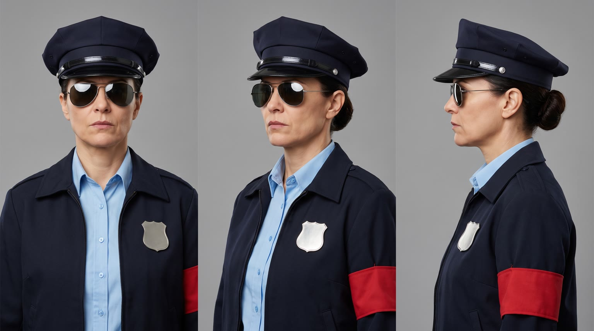
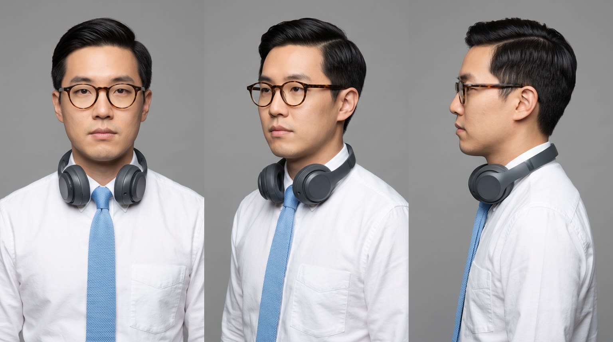
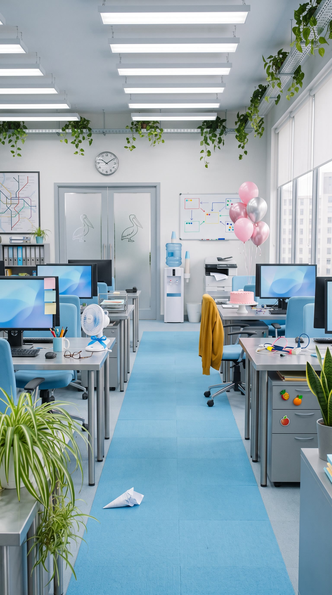
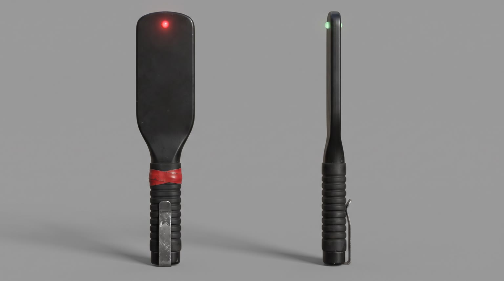
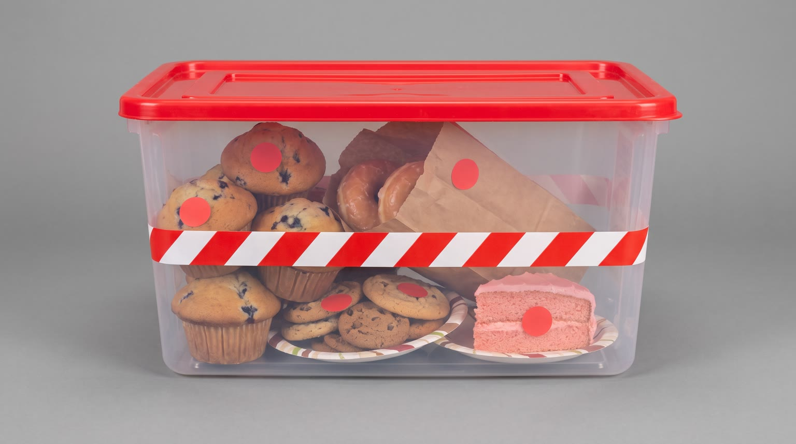
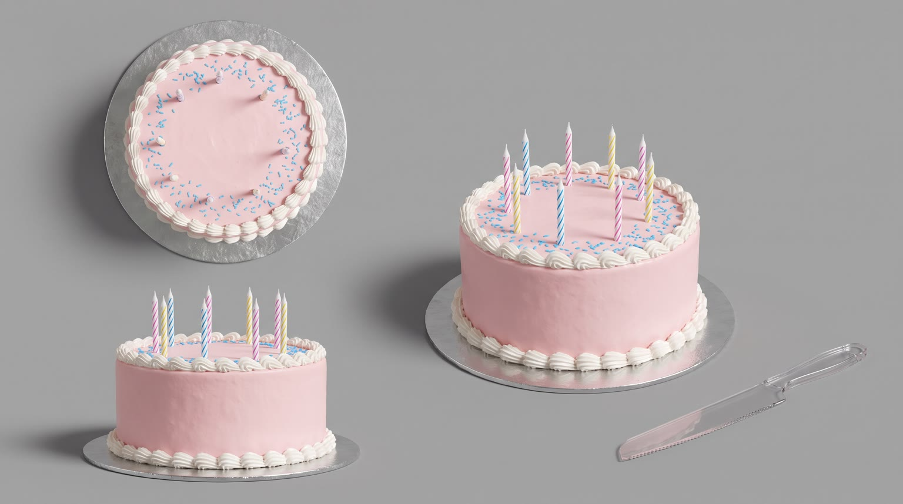

All templates · template.json · original storyboard
Skit / comedy sketchskit-01-desk-policeDesk Police
The Desk Police raid an open-plan office, confiscating muffins desk by desk, until the officer's detector reaches the one desk that passes inspection: {{product.name}} gets a salute.
Fit by product type
| ingested | great | a desk snack or beverage cleared by a raid that confiscates pastries is the cleanest version of the joke |
| applied | good | hand cream, lip balm, sunscreen or mist standing on a desk tray; the detector clears it |
| worn | good | the wand sweeps him and stops at what he is wearing: glasses, watch, headphones, sneakers, a jacket |
| handheld | great | bottles, earbuds, chargers, pens and gadgets live on a desk |
| carried | good | a work bag or case on the desk corner; she checks inside it and finds it perfectly packed |
| home | good | desk lamps, cushions, throws, plants, diffusers and office chairs sit naturally at his desk; large sofas and beds are a stretch in an office |
| consumable | good | the pack alone in his desk drawer when she expects contraband |
Refuses: products for children; alcohol; weapons, knives or anything a police parody should never salute; products whose main benefit is indulgence (a dessert or candy would be confiscated, not cleared)
Cast, world and props (shipped with the template)






- Pellwick & Co is a mid-sized freight logistics firm; the third floor is the 22-person dispatch team, who move about 4,000 pallets a week and run on snacks.
- Gary in dispatch has brought blueberry muffins every Tuesday for seven years. Today is also Brenda from accounts' 50th, and her pink cake with seven candles is waiting in the break area.
- Officer Dolores Vega has served 19 years with the Desk Standards Unit, whose one rule is: nothing on a desk that doesn't pull its weight. In practice that means pastries. 1,208 confiscations, zero warnings, and she has never once saluted anything on a desk.
- Theo runs route planning from the desk by the window. He keeps a bonsai juniper, a spotless keyboard and exactly one personal item; he has never been flagged.
- The raid starts at 10:42am, eighteen minutes before the cake.
Script: what each line must do
Right column is the worked example for Red Bull Sugarfree.
| Time | Speaker | Intent (template) | Example |
|---|---|---|---|
| 0.3-2.0 | dolores | Fixed: Desk Police. Nobody move. Max 5 words. Delivery: flat, loud, total authority, wand raised | Desk Police. Nobody move. |
| 4.0-5.6 | dolores | Fixed: Drop the muffin, Gary. Max 5 words. Delivery: calm, cold, like a hostage negotiator | Drop the muffin, Gary. |
| 8.6-9.8 | dolores | Fixed: And what's this? Max 4 words. Delivery: slow, suspicious, leaning in | And what's this? |
| 12.3-14.9 | theo | Product line: the calm hero says {{product.name}} (or its short spoken form) and the ONE benefit from product.benefits that proves it pulls its weight on a desk. benefit comes only from product.benefits, reworded no further than person and tense; two short sentences after the name at most; brand spelled phonetically in the video prompt using product.phonetic Max 9 words. Delivery: mild, matter-of-fact, not looking up from his screen until the last two words | Red Bull Sugarfree. Helps me focus. No sugar. |
| 17.0-18.3 | dolores | Fixed: Carry on, citizen. Max 4 words. Delivery: quiet, grave, mid-salute | Carry on, citizen. |
| 19.4-20.6 | dolores | Fixed: Is that frosting?! Max 4 words. Delivery: sudden bark, whipping round | Is that frosting?! |
| 27.2-29.4 | theo (off camera) | Tagline: product.tagline if the page has one, otherwise a 3 to 5 word line built from the L4 benefit, in the dry voice of a man who has never been flagged. Max 6 words. Delivery: dry voiceover, the faintest smile in it | Wiiings without sugar. |
Product-adjacent props by type
| ingested | a round cork coaster under the product on Theo's desk, beside the keyboard |
| applied | a small white ceramic tray on Theo's desk beside the bonsai, where the product stands |
| worn | nothing on the desk: Theo is wearing the product (on his wrist, face, feet or body) the whole scene |
| handheld | the clear corner of Theo's desk by the keyboard, where the product rests on a folded cloth |
| carried | the product on the corner of Theo's desk or hooked on the back of his chair |
| home | Theo's desk corner or the floor beside his chair by the window, where the product lives as part of his tidy setup (lamp, cushion, throw, chair, plant pot, diffuser) |
| consumable | Theo's shallow top desk drawer, holding the product's pack and nothing else |
Shots and how the product appears for each type
S01 · 0 to 2.2 s · absent
The frosted glass double doors at the end of the office burst open; Officer Dolores Vega strides in, wand raised like a badge, and makes the announcement.
S02 · 2.2 to 3.8 s · absent
Comedic freeze: three office workers stop dead mid-crime, one mid-bite into a doughnut, one sliding a chocolate bar into a drawer, one with a cookie halfway to her mouth.
S03 · 3.8 to 6.0 s · absent
Dolores points the wand at Gary, a sheepish man holding a blueberry muffin; the wand blinks red; she gives the order and he lowers the muffin into the bin.
S04 · 6.0 to 8.4 s · absent
Escalation two: Dolores marches down the aisle toward camera, one arm hugging the evidence tub crammed with confiscated pastries, the other sweeping the wand across desks.
S05 · 8.4 to 10.2 s · background
She arrives at Theo's desk and looms over him; he keeps typing, calm; the product is right there; she sets down the tub and leans in with the wand.
| ingested | {{product.visual}} stands upright on a round cork coaster on the desk beside his keyboard, label facing camera |
| applied | {{product.visual}} stands upright on a small white ceramic tray beside the bonsai, label facing camera |
| worn | Theo is wearing {{product.visual}} in plain view (on his wrist, face, feet or body), its best side toward camera |
| handheld | {{product.visual}} rests on a folded cloth at the corner of the desk by his keyboard, logo facing camera |
| carried | {{product.visual}} sits on the corner of his desk, zipped and neat, logo facing camera |
| home | {{product.visual}} is part of his tidy setup at its true size, on the desk corner if it is small, or beside or under him by the window if it is a chair, cushion or throw, logo toward camera |
| consumable | his shallow top desk drawer is pulled open, holding only the pack of {{product.visual}}, label facing camera |
S06 · 10.2 to 12.0 s · hero
The wand tip hovers an inch above the product; its round light turns soft green; the wand goes quiet.
| ingested | {{product.visual}} standing upright on a round cork coaster on a brushed silver office desk, fine cold droplets on it |
| applied | {{product.visual}} standing upright on a small white ceramic tray on a brushed silver office desk |
| worn | {{product.visual}} as worn by Theo, filling the frame (on his wrist, face, shoulder or foot), only the part of him that wears it in shot |
| handheld | {{product.visual}} resting on a folded cloth on a brushed silver office desk |
| carried | {{product.visual}} on a brushed silver office desk, unzipped or opened to show it neatly packed |
| home | {{product.visual}} at Theo's desk or chair, the camera low and close so the product fills the frame, its best side to camera |
| consumable | the pack of {{product.visual}} lying alone in an open desk drawer |
S07 · 12.0 to 15.2 s · in_use
Theo shows the product, label to camera, and names it without drama, looking up at her only on the last words.
| ingested | holding {{product.visual}} at chest height with the label facing camera |
| applied | holding {{product.visual}} at chest height with the label facing camera, a little of it just applied to the back of his hand |
| worn | wearing {{product.visual}}, touching it once to show it off (if it is footwear, one foot lifted into frame beside the desk) |
| handheld | holding {{product.visual}} at chest height with the logo facing camera |
| carried | holding {{product.visual}} up by its handle or strap at chest height, logo to camera |
| home | resting one hand on {{product.visual}} beside him, at its true size, logo toward camera |
| consumable | holding one {{product.visual}} from the drawer at chest height with the label facing camera |
S08 · 15.2 to 18.6 s · in_use
Dolores lowers her sunglasses, looks at the product, straightens, and snaps a crisp formal salute toward it; Theo gives a small nod.
| ingested | holds up {{product.visual}}, label visible |
| applied | holds up {{product.visual}}, label visible |
| worn | wears {{product.visual}}, turned slightly so it faces her |
| handheld | holds up {{product.visual}}, logo visible |
| carried | holds up {{product.visual}} by its handle, logo visible |
| home | sits with one hand on {{product.visual}} beside him, fully visible at its true size |
| consumable | holds up the pack of {{product.visual}}, label visible |
S09 · 18.6 to 24.4 s · in_use
The wand shrieks red; in the background Dolores dives headfirst across the break table at a pink birthday cake while co-workers scatter; in the sharp foreground Theo uses the product, unbothered.
| ingested | calmly taking one sip from {{product.visual}}, label toward camera |
| applied | calmly applying a little of {{product.visual}} to his hands or lips, label toward camera |
| worn | calmly wearing {{product.visual}}, leaning back with his hands behind his head, the product clearly visible |
| handheld | calmly using {{product.visual}}, logo toward camera |
| carried | calmly zipping {{product.visual}} closed on his lap, logo toward camera |
| home | calmly settling into or switching on {{product.visual}} beside his desk, at its true size |
| consumable | calmly using one {{product.visual}} from the pack, label toward camera |
S10 · 24.4 to 30 s · hero
The product on Theo's tidy desk; a red CLEARED stamp slams down in the empty space beside it (post); tagline and pack shot.
| ingested | {{product.visual}} stands upright on a round cork coaster in the left half of a brushed silver desk, large, filling about half the frame height, label facing camera, cold droplets, matte grey headphones lying beside it |
| applied | {{product.visual}} stands upright in the left half of a brushed silver desk, large, label facing camera, matte grey headphones lying beside it |
| worn | {{product.visual}} laid neatly in the left half of a brushed silver desk, its best side and logo to camera, matte grey headphones beside it |
| handheld | {{product.visual}} resting in the left half of a brushed silver desk, logo facing camera, matte grey headphones beside it |
| carried | {{product.visual}} standing in the left half of a brushed silver desk or on the chair beside it, logo facing camera |
| home | {{product.visual}} in its place beside Theo's empty desk and chair by the window, at its true size, in the left half of the frame, logo to camera |
| consumable | the pack of {{product.visual}} standing upright in the left half of a brushed silver desk, label facing camera, matte grey headphones beside it |
Generation units (templated prompts)
U1 · 9 s
9:16 sitcom comedy sketch, bright high-key office light, crisp digital, locked-off tripod shots, everyone completely deadpan. Shot 1 (0 to 2.2 s): wide symmetrical shot down the office aisle of @Image2, frosted glass doors burst open and @Image1 (Dolores, navy police-style uniform, peaked cap, mirrored aviators, red armband with no writing) strides in with a matte black detector wand raised and says flatly and loudly: "{{line.L1}}" Shot 2 (2.2 to 3.8 s): three office workers freeze mid-bite with a doughnut, a chocolate bar and a cookie, staring at camera, perfectly still. Shot 3 (3.8 to 6 s): @Image1 points the wand at a sheepish man in a mustard cardigan holding a blueberry muffin, the wand light blinks red with a beep, she says coldly: "{{line.L2}}" He lowers it into a grey bin. Shot 4 (6 to 9 s): @Image1 marches toward camera down the aisle hugging a clear red-lidded tub of confiscated pastries under one arm, sweeping the wand across desks. Native sound: doors banging, office murmur cutting dead, fluorescent hum, wand beeps, boots on carpet. No music. No text on screen, no writing on food, badges or boxes.U2 · 7 s · exact-risk
9:16 sitcom comedy sketch, bright office, locked-off shots, deadpan. Shot 1 (0 to 1.8 s): @Image2 (Theo, glasses, sky-blue tie, headphones on neck) types calmly at his silver desk while @Image3 (Dolores in navy uniform and aviators) looms over him with a matte black detector wand and says slowly: "{{line.L3}}" In the foreground, {{action.S05}}; the product exactly as @Image1. Shot 2 (1.8 to 3.6 s): locked macro insert, {{action.S06}}; the wand tip hovers above it, its round light turns soft green with one gentle chime, then silence. Shot 3 (3.6 to 7 s): close-up of @Image2, {{action.S07}}, saying mildly: "{{line.L4}}" (say the brand as {{product.phonetic}}). Keep the product's shape, colours and label exactly as @Image1. Native sound: keyboard clicks, the chime, room tone. No music.U3 · 10 s
9:16 sitcom comedy sketch, bright office, locked-off camera. Shot 1 (0 to 3.4 s): @Image1 (Dolores, navy uniform, peaked cap) slowly lowers her aviator sunglasses, looks at the product as @Image2 (Theo) {{action.S08}}, straightens and snaps a crisp formal salute, gravely: "{{line.L5}}" Theo gives one small nod. Shot 2 (3.4 to 10 s): deep two-plane shot, Theo in the sharp foreground at his desk; behind him the detector wand suddenly shrieks and glows red, Dolores whips round and barks: "{{line.L6}}", then dives headfirst across a break-room table toward a plain pink frosted cake with no writing while two co-workers jump back; in the foreground Theo, {{action.S09}}, unbothered; the product exactly as @Image3. Normal gravity, level horizon, the dive moves away from camera. Native sound: salute snap, alarm shriek, crash, the product's own quiet sound. No music. No text.U4 · 6 s · exact-risk
9:16 clean pack shot. Locked-off with a very slow push-in onto {{action.S10}}; the product matches @Image1 exactly and does not move or change, the brightest object in frame; a blurred bright sky-blue office behind where a co-worker walks past out of focus. Keep the space to the right of the product and above it empty. Native sound: soft office room tone. No music, no text.